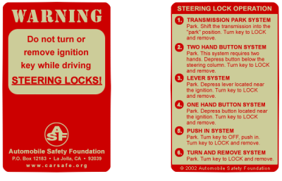
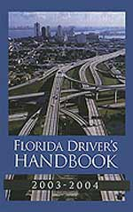
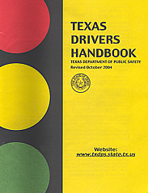
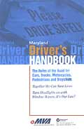
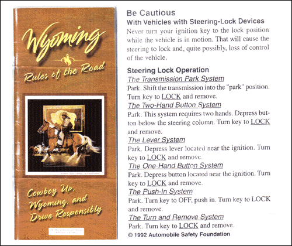
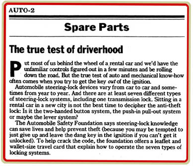
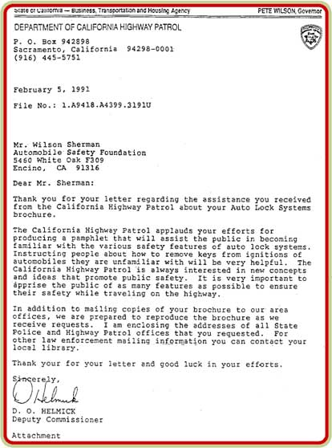
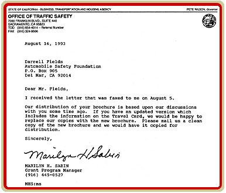
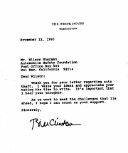
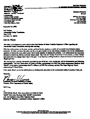

ASF CARD
The ASF CARD displays
operating instructions for the six universal steering lock systems.
The
information on the ASF CARD is now being printed by DMV offices across the U.S.
and is must reading for all drivers worldwide!
Understanding the operation of steering locks is fundamental to safe driving
and enables drivers to remove keys on borrowed or rented vehicles,
thus helping to prevent auto theft.
Travelers...don't
leave home without an ASF CARD!
Businesses...put
your name on the ASF CARD! ASF is now offering the copyright
use to the ASF CARD. Your business can print your name and contact
info on side one of the card, and give it to your customers or clients.
ASF is offering non-exclusive contracted use for a fair royalty to
be negotiated, or a one time donation. Please contact ASF for more
information.
ASF
will soon offer the ASF CARD with phone calling card, and or
discount card capabilities. Watch for future updates!
ASF
CARDS are also available free of charge to all donors. |
|

Click On Cards Above To Enlarge
National
DMV's support
the Automobile Safety Foundation
auto theft prevention effort
by providing the ASF CARD information
in their Driver Handbooks!



Tribune Article

Letter from the Department Of California Highway Patrol

Letter from the Office Of Traffic Safety 
More Letters and Newspaper Articles of Interest
Click on letters for larger images
|  |
 |
Letter from Bill Clinton |
Letter From Ohio Public Safety |
| FACTS
ABOUT STEERING LOCKS |
1. Steering locks
cause harm and death by locking a vehicle's steering while driving. 2.
Steering locks, introduced in 1969, are a failed anti-theft device that eliminates
the need for electrical system knowledge to steal a vehicle.
The steering
lock can be defeated in under 60 seconds allowing the engine
then to be started. Auto theft has tripled since 1969!
3. Steering lock
warning and education helps prevent accidents and auto theft.
4.
There are safe and effective anti-theft
steering lock alternatives. Both
General Motors and Ford are well underway replacing the steering
lock with modern, safe and effective
auto theft prevention technology. Another steering
lock alternative is the transmission lock which has been in
use by Rolls Royce and SAAB since 1969.
5. Steering locks represent
two major extremely unsafe design errors:
(a)
they are spring loaded, ignoring the fact that springs have built in metal fatigue,
and therefore must eventually malfunction, or wear out. (See
"sudden lockup")
(b) The ignition key that
deactivates the engine, should never have been combined with a device that simultaneously
locks the steering.
6. The steering lock
has no merit whatsoever, and constitutes the most dangerous design error in automotive
history.
Click here to learn more about steering locks!
|
|
|